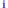
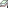
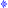

Tourismus, Sehenswürdigkeiten
OpenStreetMap
Die meisten Daten stammen von OpenStreetMap (OSM). Diese werden mindestens quartalsweise europaweit durch TYDAC aufbereitet. Stellen Sie Fehler fest, machen Sie mit beim Crowdsourcing, werden Sie einfach OSM Mapper! Klicken Sie hier und wählen Sie Start Mapping.
Legende und Angaben zur Datenaktualität
|
 |
Touristeninformation Datenquelle: TYDAC, swissinfo Nachführung: Keine, Meldungen bitte an TYDAC (info@tydac.ch) |
| Sehenswürdigkeiten Datenquelle: swissinfo Nachführung: Keine, Meldungen bitte an TYDAC (info@tydac.ch) |
|
| Kulturgüterschutz-Inventar Datenquelle: Bundesamt für Bevölkerungsschutz Nachführung: Keine |
|
|
 |
Pärke von nationaler
Bedeutung Datenquelle: Netzwerk Schweizer Pärke Informationen www.paerke.ch Nachführung: Nach Bedarf |
| Schlösser, Herrenhäuser, Festungen Datenquelle: OSM Nachführung: Wöchentlich |
|
| Ruinen Datenquelle: swissinfo Nachführung: keine |
|
| Klöster Datenquelle: swissinfo Nachführung: keine |
|
| Höhlen Datenquelle: swissinfo Nachführung: keine |
|
|
 |
Aussichtspunkte Datenquelle: swissinfo Nachführung: keine |